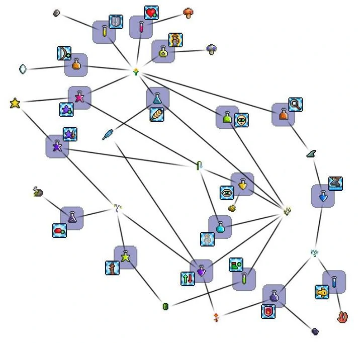

Las pociones son objetos consumibles que pueden restaurar la salud, el maná, ambos o proporcionar mejoras. La mayoría de estas se crean en la estación de alquimia o mesa de alquimia.
Existen también tres teclas de acceso rápido, siendo por defecto

Pociones de curativas y/o de maná
Se encuentran pociones que otorgan vida y/o maná. Usarlas dejará el efecto de enfermedad de poción y/o locura de maná.
Comidas y bebidas
Existen tres niveles de comida y bebidas. A mayor nivel, mejores son los aumentos del efecto positivo: bien alimentado (nivel 1), Completamente satisfecho (nivel 2) y Lleno de exquisiteces (nivel 3). Cada comida tiene su propia duración y forma de obtenerse. Todas las comidas pueden colocarse en platos. Se debe tener en cuenta que la comida dejada por monstruos no pueden obtenerse mediante estatuas.
Hay objetos consumibles que son comidas pero que no otorgan ninguno de los tres niveles de bien alimentado y en su lugar otorgan otras mejoras al personaje. Estas comidas se encuentran en una lista aparte.
recuerda no tomes pociones raras :D